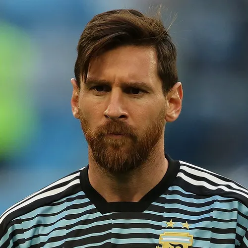

Curriculum Vitae

Lionel Anders Messi Cuccitiini
Resumen
Lionel Andrés Messi Cuccittini, nacido el 24 de junio de 1987 en Rosario, Argentina, es considerado uno de los mejores futbolistas de la historia. Actualmente juega como delantero para el Inter Miami de la MLS y es el capitán de la selección argentina.
Datos personales
- Nombre: Lionel Andres Messi Cuccittini
- Lugar de nacimiento: Rosario(Santa Fe/Argentina)
- Fecha de nacimiento: 24 de junio de 1987
Formacion
Lionel Messi inició su formación futbolística en los clubes locales de Grandoli y Newell's Old Boys en Rosario, Argentina, donde debutó en categorías inferiores. A los 13 años se trasladó a España para unirse a la prestigiosa academia del FC Barcelona, La Masia, donde perfeccionó su técnica bajo entrenadores como Rodolfo Borrell y Xavi Llorens.
Premios y reconocimientos
Lionel Messi ha acumulado una vasta lista de distinciones individuales, destacándose los siguientes premios principales:
- Balón de Oro: 8 veces (2009, 2010, 2011, 2012, 2015, 2019, 2021, 2023)
- The Best FIFA: 3 veces (2019, 2022, 2023).
- Bota de Oro: 6 veces (2009-10, 2011-12, 2012-13, 2016-17, 2017-18, 2018-19).
- Trofeo Pichichi: 8 veces (máximo goleador de La Liga).
- Balón de Oro Mundial Sub-20: 1 vez (2005).
- Balón de Oro del Mundial de la FIFA: 2 veces (2014, 2022).
- Balón de Oro de la Copa América: 2 veces (2015, 2021).
- Premio Laureus: 2 veces (2020, 2023).
- Jugador Mundial de la FIFA: 1 vez (2009).
- Mejor Jugador de la UEFA: 2 veces (2011, 2015).
- MVP de la MLS: 2 veces (2023, 2024).
- MVP de la Leagues Cup: 1 vez (2023).
- Golden Boy: 1 vez (2005).
- Trofeo Bravo: 1 vez (2007).
- FIFA FIFPro World XI: Integrante recurrente desde 2007 hasta 2023.
Fuente:Lionel Messi
Portafolio